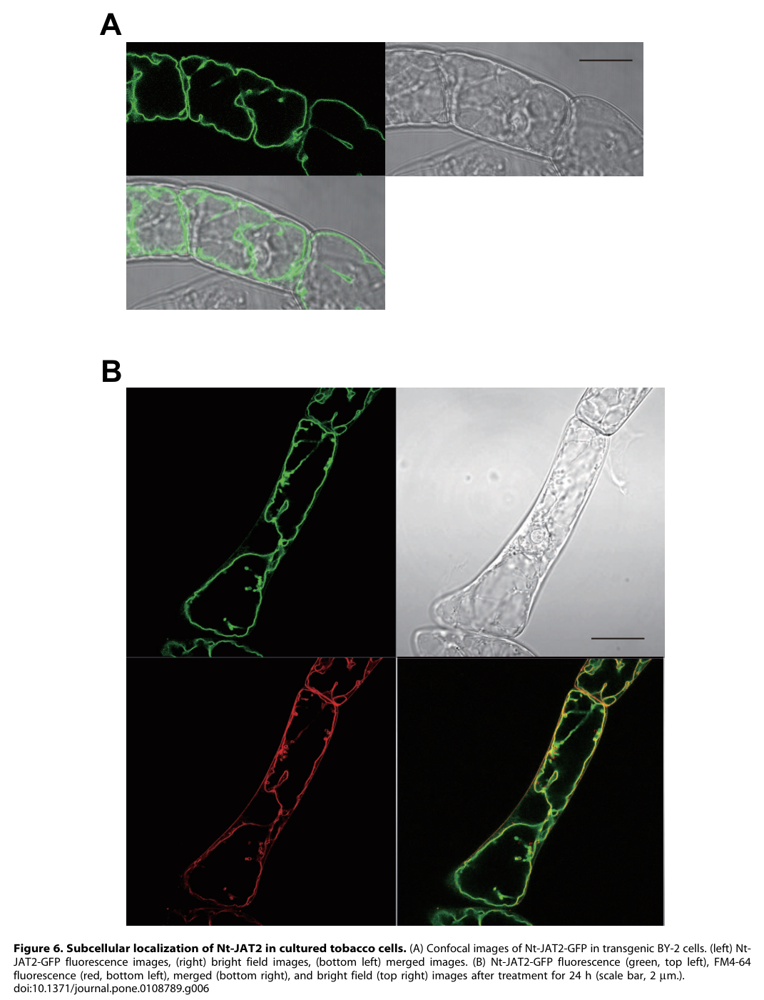

NaMATE1_candidate_DTX40_3 is the best current NICAT mapping for the MATE1-like transporter genetically linked to the late nicotine-pathway module. The public record still describes a generic MATE detoxification transporter, but the pathway paper and mapping pass together support this accession as the leading attenuata candidate for the pathway-associated MATE transporter.
| GO Term | Evidence | Action | Reason |
|---|---|---|---|
|
GO:0015297
antiporter activity
|
IEA
GO_REF:0000002 |
ACCEPT |
Summary: Antiporter activity is an appropriate catalytic-family annotation for this MATE candidate.
Reason: The current public evidence clearly supports a MATE-family antiporter even though the exact specialized substrate remains unresolved.
|
|
GO:0016020
membrane
|
IEA
GO_REF:0000120 |
KEEP AS NON CORE |
Summary: Membrane localization is appropriate but secondary to the pathway interpretation.
Reason: This is a multi-pass membrane transporter, but the central review issue is its pathway placement rather than generic localization.
Supporting Evidence:
file:NICAT/NaMATE1_candidate_DTX40_3/NaMATE1_candidate_DTX40_3-uniprot.txt
CC -!- SUBCELLULAR LOCATION: Membrane
|
|
GO:0042910
xenobiotic transmembrane transporter activity
|
IEA
GO_REF:0000002 |
UNDECIDED |
Summary: The xenobiotic-transport assignment remains unresolved until the transported substrate is tested.
Reason: Current evidence points toward a specialized nicotine-module transporter role, but the exact transported metabolite remains experimentally unresolved. Because MATE transporters often move alkaloids and other secondary metabolites, the nicotine-pathway placement does not by itself falsify a xenobiotic transmembrane transporter annotation.
Supporting Evidence:
file:NICAT/NaMATE1_candidate_DTX40_3/NaMATE1_candidate_DTX40_3-deep-research-falcon.md
No primary publication directly characterizes A0A314KVN4 / DTX40_3; annotation rests on MATE family inference (multidrug and toxic compound extrusion antiporters that often transport plant secondary metabolites) plus the nicotine-pathway genomic and co-expression evidence.
|
|
GO:0055085
transmembrane transport
|
IEA
GO_REF:0000002 |
KEEP AS NON CORE |
Summary: This broad process term is reasonable context but not the key curation outcome.
Reason: Keep the transport process annotation while prioritizing the antiporter function and pathway-specific interpretation.
|
|
GO:1990961
xenobiotic detoxification by transmembrane export across the plasma membrane
|
IEA
GO_REF:0000002 |
UNDECIDED |
Summary: This detoxification-process annotation is unresolved without substrate and localization evidence.
Reason: The reviewed evidence supports a pathway-associated metabolite transporter, but it does not identify the transported substrate or establish whether export across the plasma membrane is the relevant compartment. A nicotine- related substrate could still fit a xenobiotic-detoxification framing, so this process annotation should remain undecided pending direct transport and localization assays.
Supporting Evidence:
file:NICAT/NaMATE1_candidate_DTX40_3/NaMATE1_candidate_DTX40_3-deep-research-falcon.md
The exact transported metabolite (nicotine, nicotine glucoside, or another intermediate) and the precise membrane localization remain experimentally unresolved.
|
|
GO:0042179
nicotine biosynthetic process
|
TAS
file:NICAT/NaMATE1_candidate_DTX40_3/NaMATE1_candidate_DTX40_3-notes.md |
NEW |
Summary: MATE1 should be added as a pathway-associated nicotine biosynthetic gene.
Reason: The pathway paper keeps MATE1 in the core late module on the basis of gene clustering and coordinated expression, even though its exact transported substrate remains to be nailed down experimentally.
Supporting Evidence:
file:NICAT/NaMATE1_candidate_DTX40_3/NaMATE1_candidate_DTX40_3-notes.md
The glucosylation preprint identifies an A622-MATE1-beta-GD1 cluster, reports that these genes are root enriched and tightly co-expressed with nicotine biosynthesis genes, and keeps MATE1 in the core late-pathway module even though the exact transported metabolite remains unresolved.
|
Q: What is the direct transported substrate of the attenuata MATE1 candidate: nicotine glucoside, nicotine, or another late-pathway intermediate?
Q: Is DTX40_3 localized to the vacuolar membrane, plasma membrane, or another endomembrane compartment in the nicotine pathway context?
Experiment: Express DTX40_3 in a heterologous transport system and test transport of nicotine, nicotine glucoside, and related late-pathway intermediates.
Hypothesis: DTX40_3 preferentially transports one or more late nicotine-pathway metabolites, and direct assays are needed to determine whether xenobiotic transport annotations also apply.
Type: transporter substrate-specificity assay
Experiment: Disrupt the primary MATE1 candidate and profile subcellular metabolite partitioning together with total nicotine output after induction.
Hypothesis: Loss of DTX40_3 will alter late-pathway metabolite partitioning and reduce efficient nicotine accumulation.
Type: genetics plus compartment-resolved metabolite profiling
The research report should be a detailed narrative explaining the function, biological processes, and localization of the gene product. Citations should be given for all claims.
You should prioritize authoritative reviews and primary scientific literature when conducting research. You can supplement
this with annotations you find in gene/protein databases, but these can be outdated or inaccurate.
We are specifically interested in the primary function of the gene - for enzymes, what reaction is catalyzed, and what is the substrate specificity? For transporters, what is the substrate? For structural proteins or adapters, what is the broader structural role? For signaling molecules, what is the role in the pathway.
We are interested in where in or outside the cell the gene product carries out its function.
We are also interested in the signaling or biochemical pathways in which the gene functions. We are less interested in broad pleiotropic effects, except where these elucidate the precise role.
Include evidence where possible. We are interested in both experimental evidence as well as inference from structure, evolution, or bioinformatic analysis. Precise studies should be prioritized over high-throughput, where available.
Target identity (as specified): UniProt A0A314KVN4, gene DTX40_3 (ORF A4A49_09978) from Nicotiana attenuata (coyote tobacco). UniProt describes this protein as “Protein detoxification / multidrug and toxic compound extrusion protein” and assigns it to the MATE (multidrug and toxic compound extrusion; DTX) transporter family with InterPro/Pfam MATE domains.
Critical limitation: In the retrieved, full‑text accessible literature set, no publication explicitly mentions N. attenuata gene symbol DTX40_3, UniProt A0A314KVN4, or ORF A4A49_09978. Therefore, gene-specific functional claims (substrate, localization, phenotype) cannot be stated as experimentally validated for this N. attenuata locus. All functional annotation below is constrained to (i) family/domain-level evidence and (ii) closest Nicotiana and plant MATE homolog precedents, clearly labeled as inference. (takanashi2014themultidrugand pages 1-3, shitan2016secondarymetabolitesin pages 3-6)
Plant MATE (DTX) proteins are secondary active transporters (cation antiporters) that use an electrochemical gradient (commonly H+ in many plant examples) to drive export or compartmentation of substrates. They are generally described as efflux transporters, moving substrates from the cytosol to the apoplast or into intracellular compartments such as the vacuole. (takanashi2014themultidrugand pages 1-3, shitan2016secondarymetabolitesin pages 3-6)
A widely cited property of plant MATEs is a predicted 12-transmembrane domain (12-TM) topology; they are “presumed to function as proton antiporters” in plants. (shitan2016secondarymetabolitesin pages 3-6)
Plant MATEs transport chemically diverse substrates including secondary metabolites (alkaloids, flavonoids), organic acids (notably citrate), and hormone-related compounds (e.g., ABA/SA-related transport processes in some members). They contribute to:
- Detoxification and self-tolerance (sequestration/efflux of toxic metabolites or xenobiotics). (takanashi2014themultidrugand pages 1-3, shitan2016secondarymetabolitesin pages 3-6)
- Specialized metabolite storage, often in the vacuole (e.g., alkaloids/flavonoids). (takanashi2014themultidrugand pages 3-5, shitan2016secondarymetabolitesin pages 3-6)
- Metal homeostasis, such as citrate efflux for Fe translocation and Al3+ detoxification. (takanashi2014themultidrugand pages 7-9, takanashi2014themultidrugand pages 9-10)
Given UniProt’s description and the domain family assignment, DTX40_3 (A0A314KVN4) should be annotated as a MATE/DTX family secondary transporter likely involved in detoxification via efflux/compartmentation. This is consistent with plant MATE family roles as cation antiporters exporting substrates to the apoplast or vacuole. (takanashi2014themultidrugand pages 1-3, shitan2016secondarymetabolitesin pages 3-6)
Although not demonstrated for N. attenuata DTX40_3 specifically, the Nicotiana genus provides strong precedents that some MATEs function in alkaloid (nicotine) sequestration:
- The tobacco (N. tabacum) MATE Nt‑JAT2 is implicated in vacuolar sequestration of nicotine in leaves. It is methyl jasmonate (MeJA) inducible and leaf‑preferential, aligning with herbivory‑responsive defense deployment. (shitan2014involvementofthe pages 1-2, shitan2014involvementofthe pages 4-6)
- In yeast assays, Nt‑JAT2 expression lowered intracellular nicotine and also lowered anabasine and anatabine, supporting transport of multiple related alkaloids; it did not transport tested flavonoids in that assay. (shitan2014involvementofthe pages 3-4)
- Reviews of plant secondary metabolite transport similarly describe JAT1/JAT2 and MATE1/MATE2 as nicotine transporters that likely act as nicotine/H+ antiporters localized to the vacuolar membrane, with tissue specificity (leaf vs root vacuoles). (shitan2016secondarymetabolitesin pages 3-6, takanashi2014themultidrugand pages 3-5)
Gene-specific caution: The above is not proof that N. attenuata DTX40_3 transports nicotine; rather, it supports a plausible hypothesis that a Nicotiana MATE annotated for detoxification could participate in alkaloid compartmentation.
For DTX40_3 itself, localization is unknown in the retrieved literature. However, multiple Nicotiana alkaloid MATEs are tonoplast-localized, consistent with a vacuolar sequestration mechanism. The Nt‑JAT2 paper provides direct imaging evidence that Nt‑JAT2‑GFP localizes to the tonoplast in plant cells, while heterologous yeast expression can show different membrane patterns. (shitan2014involvementofthe media eaf0b77f, shitan2014involvementofthe media a1b95952, shitan2014involvementofthe pages 1-2)
Thus, DTX40_3 is conservatively predicted to be an endomembrane MATE, plausibly tonoplast-localized, but this needs direct experimental confirmation (e.g., GFP fusion in N. attenuata). (shitan2016secondarymetabolitesin pages 3-6)
In Nicotiana, nicotine biosynthesis and transport are strongly integrated with jasmonate signaling, coordinating expression of metabolic genes and transporters. JAT2 is explicitly described as jasmonate-inducible, linking MATE-mediated sequestration to defense signaling. (shitan2014involvementofthe pages 1-2, shitan2015translocationandaccumulation pages 2-3)
A 2024 authoritative tobacco review emphasizes that JA signaling activates transcriptional regulators coordinating downstream metabolic and transport genes needed for nicotine production and allocation. (shoji2024geneticregulationand pages 1-2)
For N. attenuata, DTX40_3 could plausibly function in the downstream transport/storage segment of JA-induced chemical defense, but again this is hypothesis without locus-specific expression data.
A major 2024 advance for functional annotation is the detailed biochemical characterization of CrMATE1 (Catharanthus roseus), a tonoplast MATE shown to be a vacuolar importer with strict substrate specificity for secologanin. The study used Xenopus oocytes to show directionality and reported quantified transport: 1 mM secologanin translocated within 25 min. (li2024characterizationofa pages 1-2)
This is relevant to DTX40_3 because it demonstrates that plant MATEs can be highly substrate-specific gatekeepers of specialized metabolism flux, reinforcing that a “detoxification MATE” annotation does not imply promiscuity and that precise substrate identification requires direct transport assays. (li2024characterizationofa pages 2-3)
A 2024 Journal of Experimental Botany review synthesizes current nicotine biology and engineering strategies and reiterates that multiple MATE transporters (JAT1/JAT2/MATE1/MATE2) mediate vacuolar sequestration of nicotine as tonoplast proton antiporters. (shoji2024geneticregulationand pages 4-5)
The same review also provides application-oriented definitions used in the field: “low nicotine” and “ultra-low nicotine” are framed as <20% and 5% of wild-type nicotine levels, respectively. (shoji2024geneticregulationand pages 1-2)
A 2023 review summarizes that DTX/MATE transporters participate in diverse processes beyond alkaloids, including:
- Seed vacuolar transport of flavonoid glycosides (e.g., DTX41/TT12). (zhang2023researchprogresson pages 8-11)
- Chloroplast envelope localization of some MATEs involved in salicylic acid-related processes (e.g., EDS5, referenced in plant MATE functional literature). (payne2016genediscoveryin pages 88-91)
For DTX40_3 annotation, this indicates that DTX naming does not uniquely specify substrate class, and that experimental localization/substrate testing is necessary.
In Nicotiana and other crops, transporters are increasingly viewed as engineering targets to alter metabolite accumulation in specific organs. The nicotine transporter literature explicitly discusses “transport engineering” concepts: coordinated manipulation of transporters can alter tissue allocation and final metabolite content. (shitan2014involvementofthe pages 6-8, shitan2015translocationandaccumulation pages 2-3)
The 2024 J Exp Bot review cites real-world regulatory goals and actions: WHO recommendation to reduce cigarette nicotine to 0.4 mg g−1 and the FDA’s proposed product standard (2022) to set a maximum nicotine level. While this is not N. attenuata biology per se, it is a major driver of transporter/biosynthesis research programs in Nicotiana. (shoji2024geneticregulationand pages 2-3)
The CrMATE1 work highlights an emerging implementation theme: identifying transport steps that constrain pathway flux and using them to optimize production of valuable specialized metabolites. (li2024characterizationofa pages 1-2, li2024characterizationofa pages 2-3)
Given: (i) UniProt’s detoxification/MATE annotation and (ii) strong Nicotiana precedent for tonoplast MATE alkaloid sequestration, the most biologically coherent hypothesis is:
DTX40_3 encodes a 12‑TM MATE/DTX transporter that uses the proton motive force to sequester (export) toxic specialized metabolites—plausibly alkaloids—into the vacuole (tonoplast) to support self‑tolerance and defense deployment. (shitan2016secondarymetabolitesin pages 3-6, takanashi2014themultidrugand pages 3-5)
Because plant MATEs also include citrate exporters for Fe translocation and Al tolerance, and hormone-related transport functions, DTX40_3 could instead belong to a metal/hormone-related clade. Metal-handling MATEs (e.g., FRD3/FRDL-type) are phylogenetically distinct and are described as mediating citrate efflux into xylem or rhizosphere, supporting Fe mobilization and Al detoxification. (takanashi2014themultidrugand pages 7-9, takanashi2014themultidrugand pages 9-10)
Without sequence-phylogeny placement or expression context for A0A314KVN4, assigning DTX40_3 specifically to “nicotine” vs “citrate/Fe/Al” vs “ABA/SA” remains uncertain.
The following figure panels document tonoplast localization of a Nicotiana MATE alkaloid transporter (Nt‑JAT2), supporting the plausibility of tonoplast targeting for related Nicotiana MATEs.
| Aspect | Evidence/notes | Best supporting citations (pqac ids) | External URL(s)/publication date(s) |
|---|---|---|---|
| Family/domain | Target identity verification: direct literature for Nicotiana attenuata DTX40_3 / UniProt A0A314KVN4 / ORF A4A49_09978 was not found in the retrieved corpus, so annotation should remain family-based and inferential. UniProt describes A0A314KVN4 as a plant MATE/DTX transporter with MATE_euk / MATE_fam / MatE domains. Broad plant MATE reviews describe this family as one of the largest transporter families in plants, involved in transport of secondary metabolites, organic acids, hormones, and xenobiotics. | (takanashi2014themultidrugand pages 1-3) | UniProt entry for A0A314KVN4: https://www.uniprot.org/uniprotkb/A0A314KVN4 ; Takanashi et al. 2014, Plant Biotechnology, Dec 2014: https://doi.org/10.5511/plantbiotechnology.14.0904a |
| Topology/energy coupling | Plant MATE transporters are typically predicted to have 12 transmembrane domains and commonly function as secondary antiporters, usually H+ coupled in plant examples. For Nicotiana alkaloid transporters, NtMATE1 shows H+/nicotine antiport activity in yeast; broader reviews state plant MATEs generally use Na+ or H+ electrochemical gradients, though proton coupling is the strongest inference for vacuolar alkaloid transporters. Thus, DTX40_3 is best annotated as a probable 12-TM H+-coupled antiporter unless direct data prove otherwise. | (shitan2016secondarymetabolitesin pages 3-6, takanashi2014themultidrugand pages 3-5, takanashi2014themultidrugand pages 1-3) | Shitan 2016, Biosci Biotechnol Biochem, Jul 2016: https://doi.org/10.1080/09168451.2016.1151344 ; Takanashi et al. 2014, Dec 2014: https://doi.org/10.5511/plantbiotechnology.14.0904a |
| Likely subcellular localization | Direct localization for DTX40_3 is unavailable. In Nicotiana tabacum, the closest functional precedents for alkaloid-associated MATEs (Nt-JAT1, Nt-JAT2, NtMATE1/2) localize primarily to the tonoplast/vacuolar membrane and mediate vacuolar sequestration. Nt-JAT2-GFP was localized to the tonoplast in BY-2 cells; yeast heterologous expression can show plasma-membrane signal, so plant-cell localization is more informative. Therefore DTX40_3 is most plausibly tonoplast-localized, though plasma membrane cannot be excluded without experiment. | (shitan2014involvementofthe pages 6-8, shitan2014involvementofthe pages 1-2, shitan2014involvementofthe pages 3-4, shitan2014involvementofthe media eaf0b77f, shitan2016secondarymetabolitesin pages 3-6) | Shitan et al. 2014, PLOS ONE, Sep 2014: https://doi.org/10.1371/journal.pone.0108789 ; Figure evidence for tonoplast localization in the same paper, Sep 2014 |
| Likely substrates | No direct substrate assay for DTX40_3 was found. The strongest Nicotiana precedent is alkaloid transport, especially nicotine, plus related alkaloids anabasine and anatabine; Nt-JAT2 also handled berberine and scopolamine in yeast assays, but not tested flavonoids such as cyanidin 3-O-glucoside or rutin. Because A0A314KVN4 is annotated as a detoxification/MATE protein from Nicotiana attenuata, a species well known for inducible defensive alkaloid metabolism, the most conservative substrate prediction is specialized metabolite cation(s), likely pyridine alkaloids or other defense-related toxic metabolites, not a broad flavonoid transporter. | (shitan2014involvementofthe pages 6-8, shitan2014involvementofthe pages 1-2, shitan2014involvementofthe pages 3-4, takanashi2014themultidrugand pages 3-5) | Shitan et al. 2014, Sep 2014: https://doi.org/10.1371/journal.pone.0108789 ; Takanashi et al. 2014, Dec 2014: https://doi.org/10.5511/plantbiotechnology.14.0904a |
| Biological role/process | Best-supported inferred role is detoxification by compartmentation, i.e., moving specialized metabolites from the cytosol into the vacuole to reduce self-toxicity while enabling accumulation for defense. In Nicotiana homologs, this role is specifically vacuolar sequestration of nicotine/alkaloids after root-to-shoot transport. More generally, plant MATEs mediate xenobiotic efflux, alkaloid/flavonoid accumulation, citrate export, Fe homeostasis, and hormone transport; however, the Nicotiana homolog evidence points most strongly to alkaloid sequestration/detoxification rather than metal or hormone transport. | (takanashi2014themultidrugand pages 3-5, takanashi2014themultidrugand pages 1-3, shitan2014involvementofthe pages 3-4, shitan2016secondarymetabolitesin pages 3-6) | Takanashi et al. 2014, Dec 2014: https://doi.org/10.5511/plantbiotechnology.14.0904a ; Shitan 2016, Jul 2016: https://doi.org/10.1080/09168451.2016.1151344 |
| Signaling/pathway context | Nicotiana MATE alkaloid transporters are closely linked to jasmonate (JA/MeJA)-responsive defense pathways. Nt-JAT2 is rapidly induced by methyl jasmonate, with strong leaf-preferential expression, supporting a role during herbivory-induced nicotine deployment. For DTX40_3 in N. attenuata, the most plausible pathway placement is therefore within JA-regulated defensive specialized metabolism, likely downstream of alkaloid biosynthesis and long-distance transport, where it would mediate final sequestration/storage. This remains an inference, not a gene-specific demonstration. | (shitan2014involvementofthe pages 6-8, shitan2014involvementofthe pages 2-3, shitan2014involvementofthe pages 4-6, payne2016genediscoveryin pages 93-97) | Shitan et al. 2014, Sep 2014: https://doi.org/10.1371/journal.pone.0108789 ; Shitan et al. 2015, Plant Signaling & Behavior, Jul 2015: https://doi.org/10.1080/15592324.2015.1035852 |
| Key quantitative data | Family- and homolog-level quantitative anchors useful for annotation: Arabidopsis has >50 / 56 MATE genes; Nt-JAT2 is induced by MeJA within ~2 h and remains elevated for 24 h; Nt-JAT2 is a ~507 aa protein predicted to contain 12 TM helices; recent plant-MATE work showed another alkaloid-pathway transporter, CrMATE1, transports 1 mM secologanin within 25 min, and VIGS reduced transcript by ~73–80%, causing 16–38-fold secologanol accumulation and reduced downstream MIAs. These values do not measure DTX40_3 directly but illustrate realistic MATE family behavior and experimental expectations. | (takanashi2014themultidrugand pages 1-3, shitan2016secondarymetabolitesin pages 3-6, shitan2014involvementofthe pages 2-3, li2024characterizationofa pages 1-2, li2024characterizationofa pages 2-3) | Takanashi et al. 2014, Dec 2014: https://doi.org/10.5511/plantbiotechnology.14.0904a ; Shitan et al. 2014, Sep 2014: https://doi.org/10.1371/journal.pone.0108789 ; Li et al. 2024, Communications Biology, Aug 2024: https://doi.org/10.1038/s42003-024-06624-5 |
| Confidence/limitations | High confidence: A0A314KVN4 is a plant MATE/DTX family transporter. Moderate confidence: it is a 12-TM, proton-coupled transporter. Moderate-to-low confidence: it is tonoplast-localized and transports nicotine/related alkaloids, because these are inferred from Nicotiana homologs rather than shown directly for DTX40_3. Low confidence for exact substrate specificity, tissue expression, and physiological phenotype until gene-specific localization, transport assays, and expression profiling are performed in N. attenuata. | (takanashi2014themultidrugand pages 1-3, shitan2014involvementofthe pages 1-2, shitan2016secondarymetabolitesin pages 3-6, takanashi2014themultidrugand pages 3-5) | Evidence synthesis based on cited sources above; no direct publication located for A0A314KVN4 / DTX40_3 in retrieved literature corpus |
Table: This table summarizes the most defensible functional annotation for Nicotiana attenuata DTX40_3 (UniProt A0A314KVN4) using direct identity information plus experimentally characterized plant and Nicotiana MATE homologs. It is useful for separating high-confidence family-level facts from lower-confidence gene-specific inferences.
References
(takanashi2014themultidrugand pages 1-3): Kojiro Takanashi, Nobukazu Shitan, and Kazufumi Yazaki. The multidrug and toxic compound extrusion (mate) family in plants. Plant Biotechnology, 31:417-430, Dec 2014. URL: https://doi.org/10.5511/plantbiotechnology.14.0904a, doi:10.5511/plantbiotechnology.14.0904a. This article has 180 citations and is from a peer-reviewed journal.
(shitan2016secondarymetabolitesin pages 3-6): Nobukazu Shitan. Secondary metabolites in plants: transport and self-tolerance mechanisms. Bioscience, Biotechnology, and Biochemistry, 80:1283-1293, Jul 2016. URL: https://doi.org/10.1080/09168451.2016.1151344, doi:10.1080/09168451.2016.1151344. This article has 231 citations.
(takanashi2014themultidrugand pages 3-5): Kojiro Takanashi, Nobukazu Shitan, and Kazufumi Yazaki. The multidrug and toxic compound extrusion (mate) family in plants. Plant Biotechnology, 31:417-430, Dec 2014. URL: https://doi.org/10.5511/plantbiotechnology.14.0904a, doi:10.5511/plantbiotechnology.14.0904a. This article has 180 citations and is from a peer-reviewed journal.
(takanashi2014themultidrugand pages 7-9): Kojiro Takanashi, Nobukazu Shitan, and Kazufumi Yazaki. The multidrug and toxic compound extrusion (mate) family in plants. Plant Biotechnology, 31:417-430, Dec 2014. URL: https://doi.org/10.5511/plantbiotechnology.14.0904a, doi:10.5511/plantbiotechnology.14.0904a. This article has 180 citations and is from a peer-reviewed journal.
(takanashi2014themultidrugand pages 9-10): Kojiro Takanashi, Nobukazu Shitan, and Kazufumi Yazaki. The multidrug and toxic compound extrusion (mate) family in plants. Plant Biotechnology, 31:417-430, Dec 2014. URL: https://doi.org/10.5511/plantbiotechnology.14.0904a, doi:10.5511/plantbiotechnology.14.0904a. This article has 180 citations and is from a peer-reviewed journal.
(shitan2014involvementofthe pages 1-2): Nobukazu Shitan, Shota Minami, Masahiko Morita, Minaho Hayashida, Shingo Ito, Kojiro Takanashi, Hiroshi Omote, Yoshinori Moriyama, Akifumi Sugiyama, Alain Goossens, Masataka Moriyasu, and Kazufumi Yazaki. Involvement of the leaf-specific multidrug and toxic compound extrusion (mate) transporter nt-jat2 in vacuolar sequestration of nicotine in nicotiana tabacum. PLoS ONE, 9:e108789, Sep 2014. URL: https://doi.org/10.1371/journal.pone.0108789, doi:10.1371/journal.pone.0108789. This article has 112 citations and is from a peer-reviewed journal.
(shitan2014involvementofthe pages 4-6): Nobukazu Shitan, Shota Minami, Masahiko Morita, Minaho Hayashida, Shingo Ito, Kojiro Takanashi, Hiroshi Omote, Yoshinori Moriyama, Akifumi Sugiyama, Alain Goossens, Masataka Moriyasu, and Kazufumi Yazaki. Involvement of the leaf-specific multidrug and toxic compound extrusion (mate) transporter nt-jat2 in vacuolar sequestration of nicotine in nicotiana tabacum. PLoS ONE, 9:e108789, Sep 2014. URL: https://doi.org/10.1371/journal.pone.0108789, doi:10.1371/journal.pone.0108789. This article has 112 citations and is from a peer-reviewed journal.
(shitan2014involvementofthe pages 3-4): Nobukazu Shitan, Shota Minami, Masahiko Morita, Minaho Hayashida, Shingo Ito, Kojiro Takanashi, Hiroshi Omote, Yoshinori Moriyama, Akifumi Sugiyama, Alain Goossens, Masataka Moriyasu, and Kazufumi Yazaki. Involvement of the leaf-specific multidrug and toxic compound extrusion (mate) transporter nt-jat2 in vacuolar sequestration of nicotine in nicotiana tabacum. PLoS ONE, 9:e108789, Sep 2014. URL: https://doi.org/10.1371/journal.pone.0108789, doi:10.1371/journal.pone.0108789. This article has 112 citations and is from a peer-reviewed journal.
(shitan2014involvementofthe media eaf0b77f): Nobukazu Shitan, Shota Minami, Masahiko Morita, Minaho Hayashida, Shingo Ito, Kojiro Takanashi, Hiroshi Omote, Yoshinori Moriyama, Akifumi Sugiyama, Alain Goossens, Masataka Moriyasu, and Kazufumi Yazaki. Involvement of the leaf-specific multidrug and toxic compound extrusion (mate) transporter nt-jat2 in vacuolar sequestration of nicotine in nicotiana tabacum. PLoS ONE, 9:e108789, Sep 2014. URL: https://doi.org/10.1371/journal.pone.0108789, doi:10.1371/journal.pone.0108789. This article has 112 citations and is from a peer-reviewed journal.
(shitan2014involvementofthe media a1b95952): Nobukazu Shitan, Shota Minami, Masahiko Morita, Minaho Hayashida, Shingo Ito, Kojiro Takanashi, Hiroshi Omote, Yoshinori Moriyama, Akifumi Sugiyama, Alain Goossens, Masataka Moriyasu, and Kazufumi Yazaki. Involvement of the leaf-specific multidrug and toxic compound extrusion (mate) transporter nt-jat2 in vacuolar sequestration of nicotine in nicotiana tabacum. PLoS ONE, 9:e108789, Sep 2014. URL: https://doi.org/10.1371/journal.pone.0108789, doi:10.1371/journal.pone.0108789. This article has 112 citations and is from a peer-reviewed journal.
(shitan2015translocationandaccumulation pages 2-3): Nobukazu Shitan, Minaho Hayashida, and Kazufumi Yazaki. Translocation and accumulation of nicotine via distinct spatio-temporal regulation of nicotine transporters in nicotiana tabacum. Plant Signaling & Behavior, 10:e1035852, Jul 2015. URL: https://doi.org/10.1080/15592324.2015.1035852, doi:10.1080/15592324.2015.1035852. This article has 45 citations and is from a peer-reviewed journal.
(shoji2024geneticregulationand pages 1-2): Tsubasa Shoji, Takashi Hashimoto, and Kazuki Saito. Genetic regulation and manipulation of nicotine biosynthesis in tobacco: strategies to eliminate addictive alkaloids. Journal of Experimental Botany, 75:1741-1753, Aug 2024. URL: https://doi.org/10.1093/jxb/erad341, doi:10.1093/jxb/erad341. This article has 37 citations and is from a domain leading peer-reviewed journal.
(li2024characterizationofa pages 1-2): Fanfan Li, Mohammadamin Shahsavarani, Cody-Jordan Handy-Hart, Audrey Côté, Xavier Brasseur-Trottier, Victoria Montgomery, Robin N. Beech, Lan Liu, Stéphane Bayen, Yang Qu, Vincenzo De Luca, and Mehran Dastmalchi. Characterization of a vacuolar importer of secologanin in catharanthus roseus. Communications Biology, Aug 2024. URL: https://doi.org/10.1038/s42003-024-06624-5, doi:10.1038/s42003-024-06624-5. This article has 12 citations and is from a peer-reviewed journal.
(li2024characterizationofa pages 2-3): Fanfan Li, Mohammadamin Shahsavarani, Cody-Jordan Handy-Hart, Audrey Côté, Xavier Brasseur-Trottier, Victoria Montgomery, Robin N. Beech, Lan Liu, Stéphane Bayen, Yang Qu, Vincenzo De Luca, and Mehran Dastmalchi. Characterization of a vacuolar importer of secologanin in catharanthus roseus. Communications Biology, Aug 2024. URL: https://doi.org/10.1038/s42003-024-06624-5, doi:10.1038/s42003-024-06624-5. This article has 12 citations and is from a peer-reviewed journal.
(shoji2024geneticregulationand pages 4-5): Tsubasa Shoji, Takashi Hashimoto, and Kazuki Saito. Genetic regulation and manipulation of nicotine biosynthesis in tobacco: strategies to eliminate addictive alkaloids. Journal of Experimental Botany, 75:1741-1753, Aug 2024. URL: https://doi.org/10.1093/jxb/erad341, doi:10.1093/jxb/erad341. This article has 37 citations and is from a domain leading peer-reviewed journal.
(zhang2023researchprogresson pages 8-11): J Zhang, Q Li, C Li, Q Wang, and X Hou. Research progress on mate transporters in plants. Unknown journal, 2023.
(payne2016genediscoveryin pages 88-91): R Payne. Gene discovery in catharanthus roseus using virus induced gene silencing. Unknown journal, 2016.
(shitan2014involvementofthe pages 6-8): Nobukazu Shitan, Shota Minami, Masahiko Morita, Minaho Hayashida, Shingo Ito, Kojiro Takanashi, Hiroshi Omote, Yoshinori Moriyama, Akifumi Sugiyama, Alain Goossens, Masataka Moriyasu, and Kazufumi Yazaki. Involvement of the leaf-specific multidrug and toxic compound extrusion (mate) transporter nt-jat2 in vacuolar sequestration of nicotine in nicotiana tabacum. PLoS ONE, 9:e108789, Sep 2014. URL: https://doi.org/10.1371/journal.pone.0108789, doi:10.1371/journal.pone.0108789. This article has 112 citations and is from a peer-reviewed journal.
(shoji2024geneticregulationand pages 2-3): Tsubasa Shoji, Takashi Hashimoto, and Kazuki Saito. Genetic regulation and manipulation of nicotine biosynthesis in tobacco: strategies to eliminate addictive alkaloids. Journal of Experimental Botany, 75:1741-1753, Aug 2024. URL: https://doi.org/10.1093/jxb/erad341, doi:10.1093/jxb/erad341. This article has 37 citations and is from a domain leading peer-reviewed journal.
(shitan2014involvementofthe pages 2-3): Nobukazu Shitan, Shota Minami, Masahiko Morita, Minaho Hayashida, Shingo Ito, Kojiro Takanashi, Hiroshi Omote, Yoshinori Moriyama, Akifumi Sugiyama, Alain Goossens, Masataka Moriyasu, and Kazufumi Yazaki. Involvement of the leaf-specific multidrug and toxic compound extrusion (mate) transporter nt-jat2 in vacuolar sequestration of nicotine in nicotiana tabacum. PLoS ONE, 9:e108789, Sep 2014. URL: https://doi.org/10.1371/journal.pone.0108789, doi:10.1371/journal.pone.0108789. This article has 112 citations and is from a peer-reviewed journal.
(payne2016genediscoveryin pages 93-97): R Payne. Gene discovery in catharanthus roseus using virus induced gene silencing. Unknown journal, 2016.

A0A314KVN4 as DTX40_3, a MATE-family multi-pass membrane antiporter. The current public entry is generic and detergent-like in naming, but it clearly places the candidate in the expected transporter family. [file:NICAT/NaMATE1_candidate_DTX40_3/NaMATE1_candidate_DTX40_3-uniprot.txt "DE RecName: Full=Protein DETOXIFICATION"; "DE AltName: Full=Multidrug and toxic compound extrusion protein"; "CC -!- SIMILARITY: Belongs to the multi antimicrobial extrusion (MATE) (TC 2.A.66.1) family."; "CC -!- SUBCELLULAR LOCATION: Membrane; Multi-pass membrane protein"]NaMATE1 to DTX40_3 / A0A314KVN4 as the best current sequence-backed NICAT ortholog to tobacco MATE1. [file:projects/NICOTINE_BIOSYNTHESIS.md "NaMATE1 -> DTX40_3 / A0A314KVN4"; "Tobacco Nitab4.5_0000884g0030 (MATE1) maps cleanly to NIATv7_g09978, then to UniProt DTX40_3."]id: A0A314KVN4
gene_symbol: NaMATE1_candidate_DTX40_3
product_type: PROTEIN
status: DRAFT
aliases:
- DTX40_3
- NaMATE1
taxon:
id: NCBITaxon:49451
label: Nicotiana attenuata
description: >-
NaMATE1_candidate_DTX40_3 is the best current NICAT mapping for the MATE1-like
transporter genetically linked to the late nicotine-pathway module. The public
record still describes a generic MATE detoxification transporter, but the
pathway paper and mapping pass together support this accession as the leading
attenuata candidate for the pathway-associated MATE transporter.
references:
- id: GO_REF:0000002
title: Gene Ontology annotation through association of InterPro records with GO
terms
findings: []
- id: GO_REF:0000120
title: Combined Automated Annotation using Multiple IEA Methods
findings: []
- id: file:NICAT/NaMATE1_candidate_DTX40_3/NaMATE1_candidate_DTX40_3-uniprot.txt
title: UniProt entry A0A314KVN4 for Nicotiana attenuata DTX40_3
findings:
- statement: DTX40_3 is a membrane-localized MATE-family antiporter
supporting_text: 'CC -!- SIMILARITY: Belongs to the multi antimicrobial extrusion (MATE) (TC 2.A.66.1) family.'
reference_section_type: DATABASE_ENTRY
- statement: UniProt places DTX40_3 in membrane and multi-pass membrane protein annotations
supporting_text: 'CC -!- SUBCELLULAR LOCATION: Membrane'
reference_section_type: DATABASE_ENTRY
- id: file:NICAT/NaMATE1_candidate_DTX40_3/NaMATE1_candidate_DTX40_3-notes.md
title: NaMATE1 DTX40_3 candidate notes
findings:
- statement: MATE1 is genomically and expression-linked to the late nicotine pathway module
supporting_text: The glucosylation preprint identifies an A622-MATE1-beta-GD1 cluster, reports that these genes are root enriched and tightly co-expressed with nicotine biosynthesis genes, and keeps MATE1 in the core late-pathway module even though the exact transported metabolite remains unresolved.
reference_section_type: LITERATURE_REVIEW
- statement: DTX40_3 is the best current sequence-backed NICAT ortholog to tobacco MATE1
supporting_text: The 2026-04-05 mapping dive assigns NaMATE1 to DTX40_3 / A0A314KVN4 as the best current sequence-backed NICAT ortholog to tobacco MATE1.
reference_section_type: LITERATURE_REVIEW
- id: file:NICAT/NaMATE1_candidate_DTX40_3/NaMATE1_candidate_DTX40_3-deep-research-falcon.md
title: Deep research report on NaMATE1/DTX40_3 (Falcon/Edison Scientific Literature)
findings:
- statement: No primary publication directly characterizes A0A314KVN4 / DTX40_3;
annotation rests on MATE family inference (multidrug and toxic compound extrusion
antiporters that often transport plant secondary metabolites) plus the nicotine-pathway
genomic and co-expression evidence placing this candidate as the attenuata
ortholog of tobacco MATE1 in the A622-MATE1-beta-GD1 late-pathway module
- the exact transported metabolite (nicotine, nicotine glucoside, or another
intermediate) and the precise membrane localization remain experimentally
unresolved.
existing_annotations:
- term:
id: GO:0015297
label: antiporter activity
evidence_type: IEA
original_reference_id: GO_REF:0000002
review:
summary: Antiporter activity is an appropriate catalytic-family annotation for this MATE candidate.
action: ACCEPT
reason: >-
The current public evidence clearly supports a MATE-family antiporter even
though the exact specialized substrate remains unresolved.
- term:
id: GO:0016020
label: membrane
evidence_type: IEA
original_reference_id: GO_REF:0000120
review:
summary: Membrane localization is appropriate but secondary to the pathway interpretation.
action: KEEP_AS_NON_CORE
reason: >-
This is a multi-pass membrane transporter, but the central review issue is
its pathway placement rather than generic localization.
supported_by:
- reference_id: file:NICAT/NaMATE1_candidate_DTX40_3/NaMATE1_candidate_DTX40_3-uniprot.txt
supporting_text: 'CC -!- SUBCELLULAR LOCATION: Membrane'
reference_section_type: DATABASE_ENTRY
- term:
id: GO:0042910
label: xenobiotic transmembrane transporter activity
evidence_type: IEA
original_reference_id: GO_REF:0000002
review:
summary: The xenobiotic-transport assignment remains unresolved until the transported substrate is tested.
action: UNDECIDED
reason: >-
Current evidence points toward a specialized nicotine-module transporter
role, but the exact transported metabolite remains experimentally
unresolved. Because MATE transporters often move alkaloids and other
secondary metabolites, the nicotine-pathway placement does not by itself
falsify a xenobiotic transmembrane transporter annotation.
supported_by:
- reference_id: file:NICAT/NaMATE1_candidate_DTX40_3/NaMATE1_candidate_DTX40_3-deep-research-falcon.md
supporting_text: >-
No primary publication directly characterizes A0A314KVN4 / DTX40_3;
annotation rests on MATE family inference (multidrug and toxic compound
extrusion antiporters that often transport plant secondary metabolites)
plus the nicotine-pathway genomic and co-expression evidence.
reference_section_type: LITERATURE_REVIEW
- term:
id: GO:0055085
label: transmembrane transport
evidence_type: IEA
original_reference_id: GO_REF:0000002
review:
summary: This broad process term is reasonable context but not the key curation outcome.
action: KEEP_AS_NON_CORE
reason: >-
Keep the transport process annotation while prioritizing the antiporter
function and pathway-specific interpretation.
- term:
id: GO:1990961
label: xenobiotic detoxification by transmembrane export across the plasma membrane
evidence_type: IEA
original_reference_id: GO_REF:0000002
review:
summary: This detoxification-process annotation is unresolved without substrate and localization evidence.
action: UNDECIDED
reason: >-
The reviewed evidence supports a pathway-associated metabolite transporter,
but it does not identify the transported substrate or establish whether
export across the plasma membrane is the relevant compartment. A nicotine-
related substrate could still fit a xenobiotic-detoxification framing, so
this process annotation should remain undecided pending direct transport
and localization assays.
supported_by:
- reference_id: file:NICAT/NaMATE1_candidate_DTX40_3/NaMATE1_candidate_DTX40_3-deep-research-falcon.md
supporting_text: >-
The exact transported metabolite (nicotine, nicotine glucoside, or
another intermediate) and the precise membrane localization remain
experimentally unresolved.
reference_section_type: LITERATURE_REVIEW
- term:
id: GO:0042179
label: nicotine biosynthetic process
evidence_type: TAS
original_reference_id: file:NICAT/NaMATE1_candidate_DTX40_3/NaMATE1_candidate_DTX40_3-notes.md
review:
summary: MATE1 should be added as a pathway-associated nicotine biosynthetic gene.
action: NEW
reason: >-
The pathway paper keeps MATE1 in the core late module on the basis of gene
clustering and coordinated expression, even though its exact transported
substrate remains to be nailed down experimentally.
supported_by:
- reference_id: file:NICAT/NaMATE1_candidate_DTX40_3/NaMATE1_candidate_DTX40_3-notes.md
supporting_text: The glucosylation preprint identifies an A622-MATE1-beta-GD1 cluster, reports that these genes are root enriched and tightly co-expressed with nicotine biosynthesis genes, and keeps MATE1 in the core late-pathway module even though the exact transported metabolite remains unresolved.
reference_section_type: LITERATURE_REVIEW
core_functions:
- molecular_function:
id: GO:0015297
label: antiporter activity
directly_involved_in:
- id: GO:0042179
label: nicotine biosynthetic process
description: >-
DTX40_3 is the best current NICAT MATE1 candidate for the membrane transport
step associated with the late nicotine biosynthetic module.
supported_by:
- reference_id: file:NICAT/NaMATE1_candidate_DTX40_3/NaMATE1_candidate_DTX40_3-notes.md
supporting_text: The glucosylation preprint identifies an A622-MATE1-beta-GD1 cluster, reports that these genes are root enriched and tightly co-expressed with nicotine biosynthesis genes, and keeps MATE1 in the core late-pathway module even though the exact transported metabolite remains unresolved.
reference_section_type: LITERATURE_REVIEW
proposed_new_terms: []
suggested_questions:
- question: >-
What is the direct transported substrate of the attenuata MATE1 candidate:
nicotine glucoside, nicotine, or another late-pathway intermediate?
- question: Is DTX40_3 localized to the vacuolar membrane, plasma membrane, or another endomembrane compartment in the nicotine pathway context?
suggested_experiments:
- description: Express DTX40_3 in a heterologous transport system and test transport of nicotine, nicotine glucoside, and related late-pathway intermediates.
experiment_type: transporter substrate-specificity assay
hypothesis: DTX40_3 preferentially transports one or more late nicotine-pathway metabolites, and direct assays are needed to determine whether xenobiotic transport annotations also apply.
- description: Disrupt the primary MATE1 candidate and profile subcellular metabolite partitioning together with total nicotine output after induction.
experiment_type: genetics plus compartment-resolved metabolite profiling
hypothesis: Loss of DTX40_3 will alter late-pathway metabolite partitioning and reduce efficient nicotine accumulation.
{kind=link}